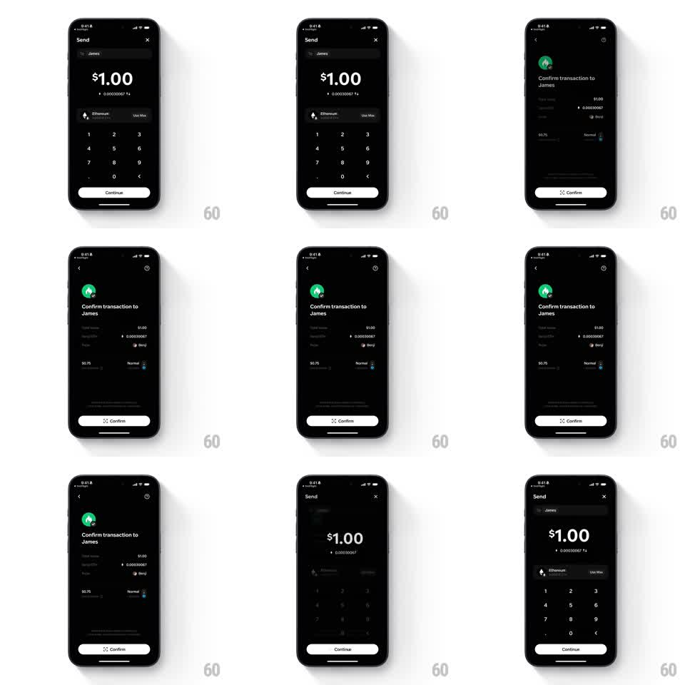

Media
Frame-by-frame

Rebuild this interaction 1:1: Family's send-to-confirm morph - on the dark Send screen, "$1.00" entered for James morphs with the screen as it pushes to "Confirm transaction to James", the amount and recipient carrying over as shared elements while the fee and Confirm button assemble, then morphs back on return.

Rebuild this interaction 1:1: Family's send-to-confirm morph - on the dark Send screen, "$1.00" entered for James morphs with the screen as it pushes to "Confirm transaction to James", the amount and recipient carrying over as shared elements while the fee and Confirm button assemble, then morphs back on return.
## Integration
Integration: stack-agnostic spec - springs given as stiffness/damping, timed motions as duration + curve; map every value to your framework and animation library of choice.
## Scene
Dark Send screen: "To: James" row, big "$1.00" ("0.00030067 ETH"), Ethereum row with Use Max, numpad, white Continue. Confirm screen: green James avatar with a check badge, "Confirm transaction to James", amount rows ($1.00 / 0.00030067 ETH, To: James, From: Benji), fee row ("$0.75", "Normal"), back chevron, white "Confirm" pill with an arrow glyph.
## Motion spec
Pattern: shared-element screen morph with assembled detail rows.
- Tap Continue: the numpad drops (200ms) and the Send screen slides left (300ms, ease-in-out) as the Confirm screen slides in from the right; the "$1.00" amount and the ETH conversion travel as shared elements, gliding to their positions in the detail rows (arc, 300ms) and shrinking from display size to row size.
- The James avatar rises to the header position (translateY 20pt -> 0, spring ~320/18) and its green check badge pops (scale 0 -> 1, spring ~340/14, delayed 200ms).
- The detail rows stagger in (50ms apart, translateY 10pt -> 0, opacity 0 -> 1); the fee row arrives last.
- The Confirm pill rises (200ms) with its arrow glyph drawing in (stroke 200ms).
- Back: the reverse morph restores the numpad and the big "$1.00" intact.
## Calibration
- The amount never duplicates - it is one element moving between layouts.
- Both pills (Continue, Confirm) share size, radius, and bottom anchor.
## Reduced motion
Screens crossfade (250ms); rows fade without stagger.
## Don't miss
- The check badge on the avatar is green with a white check - the only saturated accent on the dark screen.
- The fee shows "$0.75" with a "Normal" speed label beside it.